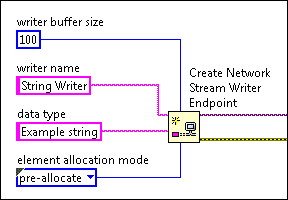

Network stream endpoints use a FIFO buffer to transfer data. The data type and buffer size inputs of the Create Network Stream Writer Endpoint and Create Network Stream Reader Endpoint functions determine how much memory the buffer requires. The element allocation mode input of these functions determines when initial buffer memory is allocated for non-scalar data types.
Regardless of the allocation mode you select, buffer size affects the amount of memory your application uses. Always monitor memory usage when testing your applications.
Use the element allocation mode input on the Create Network Stream Writer Endpoint and Create Network Stream Reader Endpoint functions to specify allocation mode.
|
Note��The element allocation mode input does not affect the transfer of scalar data types. Scalar data transfers operate in pre-allocate mode. |
Use allocate as needed mode if your application transfers non-scalar data and you cannot determine the maximum size of each data element before run-time. In allocate as needed mode, LabVIEW allocates only enough memory to create a pointer or handle for each data element when the network stream is created. LabVIEW then dynamically allocates additional memory for each element as it enters the buffer.
Use pre-allocate mode if your application transfers non-scalar data and you can determine the maximum size of each data element at edit-time. In pre-allocate mode, the Create Network Stream Writer Endpoint and Create Network Stream Reader Endpoint functions allocate initial buffer memory based on the data type input and writer buffer size or reader buffer size inputs.
To pre-allocate an endpoint buffer, you must wire an element of the maximum expected size to the data type input. The following figure shows a Create Network Stream Writer Endpoint function that allocates memory for 100 string elements when the endpoint is created, each with a maximum size equivalent to Example string.

|
Note��Additional memory is allocated dynamically if an element requires more than the pre-allocated amount of memory at runtime. |